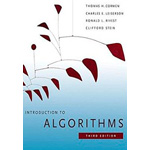

Lecture Sessions
| Session | Topic | Sub-Topics | Reference | Resources |
|---|---|---|---|---|
| Session-01 | Introduction |
Primary Objectives
Geometry of Data |
James et al. (ISLR) : Ch. 1, 2.1
Hastie and Tibshirani : Ch. 1 Lectures |
Kaggle Competitions
UCI Data Repository |
| Session-02 | Linear Regression |
as Optimization
as Estimation for Prediction |
James et al. (ISLR) : Ch. 3.1, 3.2, 3.4
Hastie and Tibshirani : Ch. 3 Lectures Andrew Ng ML Course : Lecture 2 |
WorksheetLinReg.R
Advertising.csv Gradient Descent |
| Session-03 | Model Selection |
by Cross-Validation
by Subset Selection using Regularization |
James et al. (ISLR) : Ch. 5.1, 6.1, 6.2
Hastie and Tibshirani : Ch. 5 Lectures Hastie and Tibshirani : Ch. 6 Lectures |
WorksheetModSel.R
Advertising.csv Bias-Variance |
| Homework | Linear Regression | Model Building | James et al. (ISLR) : Ch. 3.6 | ExperimentLinReg.R |
| Session-04 | Logistic Regression |
through Link Function
and MLE formulation |
James et al. (ISLR) : Ch. 4.1 to 4.3
Hastie and Tibshirani : Ch. 4 Lectures |
WorksheetLogReg.R
Maximum Likelihood |
| Session-05 | Tree-based Models |
for Classification
for Regression Bagging and Boosting |
James et al. (ISLR) : Ch. 8.1, 8.2
Hastie and Tibshirani : Ch. 8 Lectures ML Course from UW : Weeks 3, 4, 5 |
WorksheetClassTree.R
WorksheetRegTree.R CarEvaluation.csv |
| Session-06 | Support Vector Models |
through Geometry
by Optimization by Transformation |
James et al. (ISLR) : Ch. 9.1 to 9.5
Hastie and Tibshirani : Ch. 9 Lectures Andrew Ng ML Course : Lectures 7, 8 |
WorksheetSupVec.R
WorksheetSVM.R Learning Kernels |
| Session-07 | Un-Supervised Learning |
through Geometry
by Clustering by Embedding |
James et al. (ISLR) : Ch. 10.1 to 10.3
Hastie and Tibshirani : Ch. 10 Lectures ML Course from UW : Weeks 1 to 6 |
WorksheetClustering.R
WorksheetDimRed.R joker.jpg |
| Session-08 | Misc. Topics & Pointers |
Google PageRank
Scraping Web-Data |
Leskovec et al. (MMDS) : Ch. 5 and 9
Andrew Ng Lectures (Recommenders) |
WorksheetPageRank.R
WorksheetScraping.R |
{kind=link}
Books and Compilations
Textbooks and Recommended References
-

An Introduction to Statistical Learning
Gareth James, Daniela Witten, Trevor Hastie and Robert Tibshirani Available online at this link -

The Elements of Statistical Learning
Trevor Hastie, Robert Tibshirani and Jerome Friedman Available online at this link -

Mining of Massive Datasets
Jure Leskovec, Anand Rajaraman and Jeff Ullman Available online at this link -

Introduction to Algorithms
Thomas H. Cormen, Charles E. Leiserson, Ronald L. Rivest and Clifford Stein The MIT Press (Third Edition), 2009 -

Numerical Algorithms
Justin Solomon Available online at this link
Lecture Videos and Notes
Adds a completely new dimension to Reading
-
Statistical Learning | Hastie and Tibshirani
Lecture videos available online at this link -
Machine Learning | Univ. of Washington
Coursera course available online at this link -

Machine Learning | Andrew Ng
Lecture videos available online at this link -

Machine Learning | Nando de Freitas
Lecture videos available online at this link -

Numerical Algorithms | Justin Solomon
Lecture videos available online at this link -

Linear Algebra | Gilbert Strang
Lecture videos available online at this link
R Programming Resources
- Introduction to R by DataCamp | Quite nice introduction, and even better, free!
- R by Example | By Ajay Shah | Quick illustrative examples of features.
-
Advanced topics in R and Understanding Memory in R | By Hadley Wickham
Really good articles on the advanced technical nitty-gritties of R. -
R and Data Mining | By Yanchang Zhao
Wonderful book with a number of cool applications of Data Mining. - Introducing
Monte Carlo Methods with R | By C.P. Robert and G. Casella
Lovely introduction to Monte Carlo simulations with hands-on applications in R. -
Monte Carlo Simulations in R | By Will Kurt
Nice blog-post introducing Monte Carlo simulations using R.
Python Programming Resources
- Python Class by Google | Decent online class to learn the basics of Python.
- Think Python | By Allen B. Downey | Teaches CS through Python.
- Introduction to Python for Data Science by DataCamp | Really nice free course.
-
scikit-learn -- Machine Learning in Python
Undoubtedly the best Python package for Data Analytics and Machine Learning.
Visual Map for ML Algorithms | Video Tutorials from Data School -
Building Machine Learning Systems with Python
Wonderful book with a number of cool applications of Machine Learning.
By Willi Richert and Luis Pedro Coelho | Source Codes from GitHub - A Programmer's Guide to Data Mining | By Ron Zacharski | Really nice!
Hands-on Projects
Take part in a competition on Kaggle, DrivenData, CrowdAnalytix, InnoCentive, etc., or try to explore the open datasets made available by UNICEF, WHO, AWS, Google, EU, and US Govt.
Try to get inspired by the list of Stanford CS229 (Andrew Ng) projects available at 2016, 2016 Spring, 2015, 2014, 2013, 2012, 2011, 2010, 2009, 2008, 2007, 2006, 2005, 2004, or by the diverse array of Business Case Studies posted by the Sloan School, MIT.
Check the list of PGDBA projects available at CDS 2016, CDS 2015, completed as a part of the "Computing for Data Sciences" course offered at Indian Statistical Institute, Kolkata.
Cool Links
- Google AI Experiments | Google takes "cool" to a new level in Artificial Intelligence.
- NELL: Never-Ending Language Learning | An awesome idea from Carnegie Mellon U.
- D3.js : Data-Driven Documents | An excellent JavaScript library to showcase data.
- The Yhat Blog | The best online source for authoritative articles on Data Science.
- A visual introduction to machine learning | Simply amazing; a visual treat indeed.
- colah's blog | A visual introduction to complicated concepts in Neural Networks.
Let me know if you find other cool links related to ML and Data Science, and I will include it in this list.